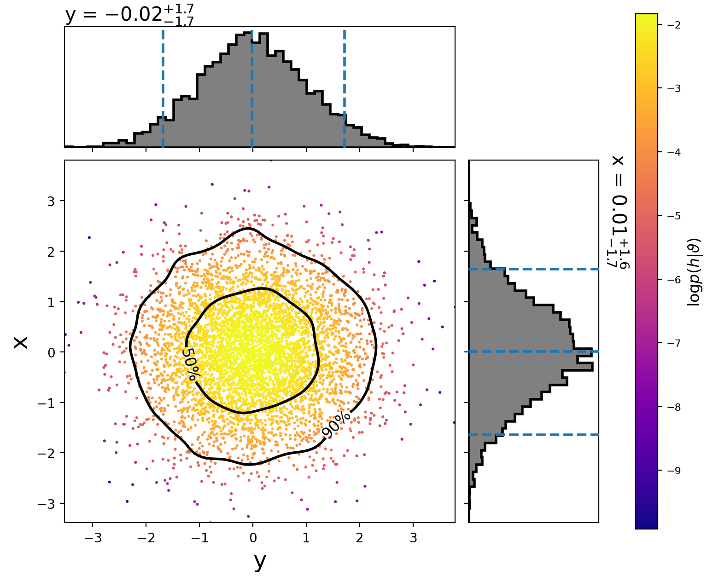

Running on an analytic distribution
Several analytic distributions are available to run tests on. These can be run quickly on a laptop to check that a sampler is working properly.
This example demonstrates how to sample a 2D normal distribution with the
emcee sampler. First, we create the following configuration file:
[model]
name = test_normal
[sampler]
name = emcee
nwalkers = 5000
niterations = 100
[variable_params]
x =
y =
[prior-x]
name = uniform
min-x = -10
max-x = 10
[prior-y]
name = uniform
min-y = -10
max-y = 10
By setting the model name to test_normal we are using
TestNormal.
The number of dimensions of the distribution is set by the number of
variable_params. The names of the parameters do not matter, just that just
that the prior sections use the same names.
Now run:
#!/bin/sh
pycbc_inference --verbose \
--config-files normal2d.ini \
--output-file normal2d.hdf \
--nprocesses 2 \
--seed 10 \
--force
This will run the emcee sampler on the 2D analytic normal distribution with
5000 walkers for 100 iterations. When it is done, you will have a file called
normal2d.hdf which contains the results. It should take about a minute to
run. If you have a computer with more cores, you can increase the
parallelization by changing the nprocesses argument.
To plot the posterior distribution after the last iteration, run:
#!/bin/sh
pycbc_inference_plot_posterior --verbose \
--input-file normal2d.hdf \
--output-file posterior-normal2d.png \
--plot-scatter \
--plot-contours \
--plot-marginal \
--z-arg 'loglikelihood:$\log p(h|\vartheta)$' \
--iteration -1
This will create the following plot:
{kind=link}
The scatter points show each walker’s position after the last iteration. The points are colored by the log likelihood at that point, with the 50th and 90th percentile contours drawn.
See below for more information about using pycbc_inference_plot_posterior.
To make a movie showing how the walkers evolved, run:
#!/bin/sh
pycbc_inference_plot_movie --verbose \
--nprocesses 4 \
--input-file normal2d.hdf \
--output-prefix frames-normal2d \
--movie-file normal2d_mcmc_evolution.mp4 \
--cleanup \
--plot-scatter \
--plot-contours \
--plot-marginal \
--z-arg 'loglikelihood:$\log p(h|\vartheta)$' \
--frame-step 1
Note
You need ffmpeg installed for the mp4 to be created.